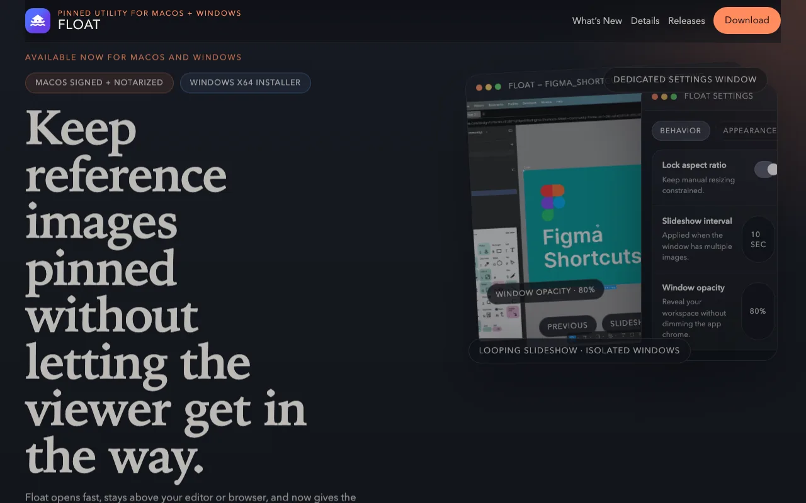
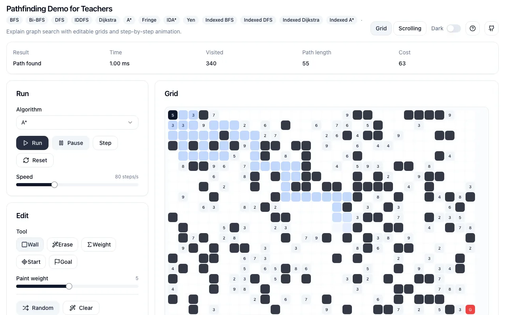
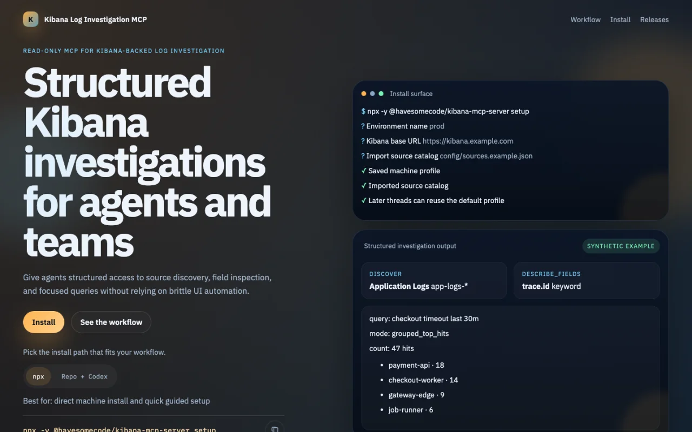

01 / Desktop utility
Float
I kept losing reference images behind my editor. Float is the small app I wanted: pin an image, adjust its opacity, and get back to what I was doing.
Rust · Tauri · macOS + Windows

Open project01 / Hello
Hello, I’m Zacaria.
I build software and help teams make sense of difficult technical work. I also start side projects whenever a question refuses to leave me alone. HaveSomeCode is where I share the ones that made it somewhere.

Software · side projects · talks · questions I’m still following
02 / Selected work
Some started with a practical annoyance. Others began with a question I wanted to see moving.
01 / Desktop utility
I kept losing reference images behind my editor. Float is the small app I wanted: pin an image, adjust its opacity, and get back to what I was doing.
Rust · Tauri · macOS + Windows

Open project02 / Interactive experiment
I wanted to watch search algorithms make decisions instead of reading another diagram. This Rust/WASM playground lets you edit the grid, change the algorithm, and step through the search.
Rust · WebAssembly · React

Open experiment03 / Read-only investigation tool
I wanted agents to investigate logs through small, read-only operations instead of clicking through Kibana. This MCP gives them a structured path from source discovery to focused queries.
TypeScript · MCP · Kibana · npm

Open projectThese are only the tidier ones. Everything else is on GitHub
03 / Questions I return to
I tend to circle around the same ideas, whether I’m debugging a system or starting a side project.
I like tracing a problem through the whole system before deciding which part deserves to change.
I enjoy finding the diagram, example, or name that makes a complicated idea easier to carry.
Software becomes useful when the people around it can reason about it, question it, and change it.
I would rather give an idea a fair experiment than argue about it in the abstract for too long.
04 / Speaking
I like the moment an idea finally makes sense to someone else. This talk was my practical argument for using Rust where API reliability, performance, and cost matter.
Watch the talk05 / Away from the work
I’m Zacaria. I live in France, work as a Lead Developer, and often follow an idea long after it would have been sensible to stop.
I like Rust, games, visual explanations, and small tools that remove tiny daily annoyances. At work I think a lot about how systems and people affect each other. Side projects let me chase whatever has my attention.
I work comfortably in English. Away from software, I practise karate and keep finding new things to study.
06 / Come say hello
If you’re working on something difficult or genuinely interesting, I’d be happy to hear about it.